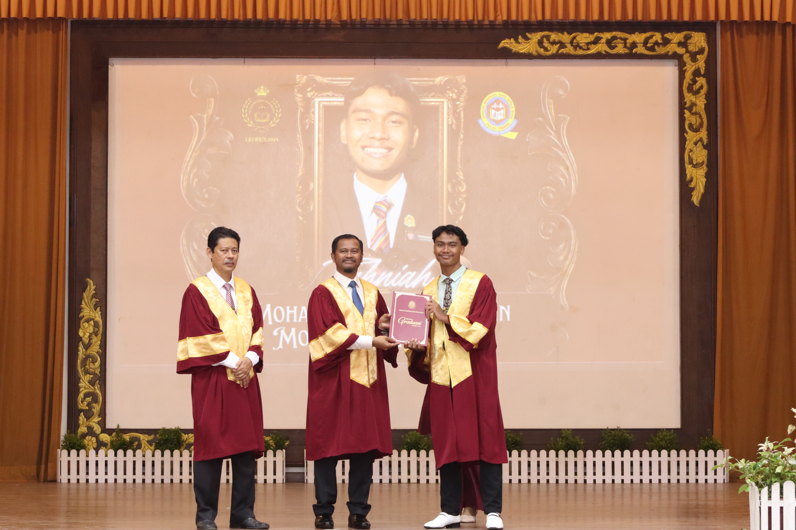
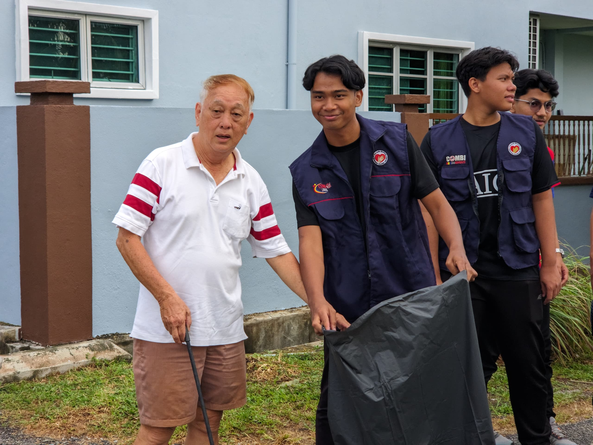

My educational journey has provided the foundation for my growth in technology, leadership, creativity and lifelong learning.

My secondary school journey was where I discovered my passion for leadership, teamwork, multimedia and co-curricular excellence.
Throughout my time at SM Sains Kepala Batas, I actively participated in student organisations, event management, media production and sports activities. These experiences helped develop communication skills, discipline and confidence while preparing me for future leadership roles.

Currently pursuing a Diploma in Computer Science with strong interest in software development, web technologies and digital innovation.
Beyond academics, I actively engage in student leadership, volunteer programmes and technical committees to further develop organisational, communication and professional skills while contributing to the university community.
Developing analytical thinking through academic challenges and technical projects.
Organising programmes, managing teams and representing student communities.
Public speaking, teamwork and collaborative project experiences.
Programming, web development, multimedia production and digital tools.